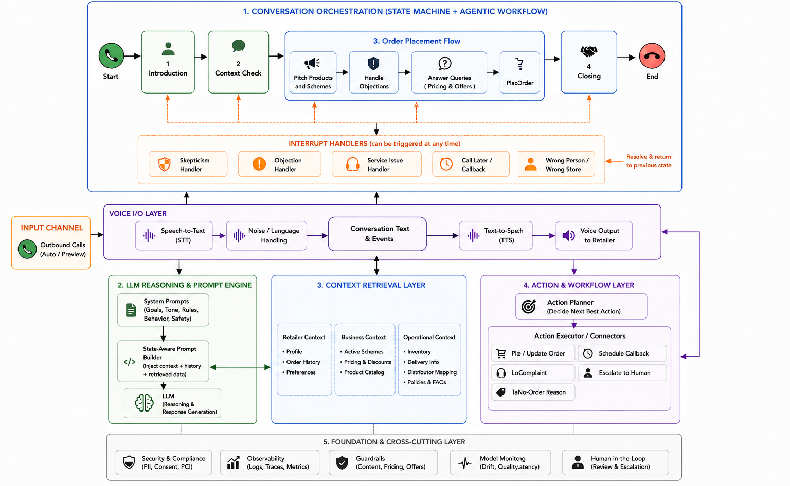

In a retail distribution model, daily ordering heavily depends on salesmen visiting retailers physically. However, there are two major operational gaps: salesman absenteeism and vacant sales routes. Together, these lead to significant missed retailer engagement and lost orders on a daily basis.
There are ways of recovery — such as the tele-sell team, RSU vehicles, and self-ordering app — but these are only able to recover 30% of the lost revenue. The tele-sell team has limited calling bandwidth and hence is not able to cover all outlets which are at risk of lost sales.
Can we create an always-available, scalable, low-cost sales recovery layer that recovers otherwise lost revenue while maintaining acceptable unit economics?

I structured the pilots progressively. I first conducted a small pilot with one vendor to understand the problem and establish a baseline. After establishing a baseline, I conducted a second pilot with the same vendor — this time incorporating learnings from the first pilot to improve the workflow and validate whether it led to improved results. Once I had a richer understanding of the workflow from the second pilot, I went ahead with a third pilot evaluating additional vendors. In the fourth pilot, I moved into a structured optimization phase focused on conversion, AOV, and unit economics — an ongoing phase — with the selected vendor.
I started with a vendor because my first goal was to establish a baseline. I designed a simple order-taking workflow based on analysis of existing tele-sell conversations and tested whether retailers would:
The first pilot helped us identify major friction points:
At this stage, the biggest outcome wasn't conversion. It was learning.
After identifying the friction points in the first pilot, I designed an improved workflow that:
This led to an improvement in the funnel, particularly engaged-to-order conversion, which increased from 6.5% to 9%. More importantly, we generated a much richer understanding of retailer behaviour and conversation failure points.
Once I had a clearer picture of what a successful AI sales conversation required, I engaged additional vendors. By this stage, I had a much more mature evaluation framework. I knew we needed capabilities such as:
Instead of evaluating generic AI capabilities, I evaluated each vendor against the specific retailer behaviours we had observed in earlier pilots.
One vendor emerged as the strongest performer across conversion, conversation quality, and workflow flexibility. Rather than immediately scaling, I treated that as another learning phase. I designed a structured experimentation roadmap around:
The goal shifted from validating feasibility to optimising conversion, AOV, and cost-to-serve.
A single AI agent trying to do everything — verify the retailer, pitch products, handle complaints, manage objections, close the call — becomes very hard to build, test, and improve. Each task requires different context, different logic, and different failure modes.
The multi-agent approach breaks the call into specialist agents, each owning one job. The Orchestrator sits above them all and decides which agent should be active at any moment — like a call center supervisor routing between specialists.
Think of this as the "brain" of the system. It:
The Orchestrator never speaks to the retailer directly. It only routes.
Confirms it's speaking to the right store. Checks against the Retailer DB — store name, owner name, phone. Two outcomes: verified (proceed) or wrong store (hand off to Wrong Store interrupt agent, close gracefully).
Explains why it's calling — "Your salesman is absent today, so I've called to take your order." Warms up the conversation, reads the retailer's tone (engaged? busy? irritated?). The Orchestrator uses this signal to decide whether to proceed to pitch or hand off to an interrupt agent.
Pulls the retailer's past order history and leads with familiar SKUs. Surfaces the most relevant active schemes. Then asks about stock — the retailer's answer determines which path the call takes next.
Stock Agent (4A): Retailer says they have stock — asks what specifically, cross-references against their usual basket, and pitches on the gaps. "I see you usually order Thums Up 2L — are you running low on that?"
AOV Agent (4B): Retailer has full stock — pivots to impulse SKUs, new launches, scheme urgency ("this offer ends Friday"), social proof. If no traction, moves gracefully to close.
Reads back the full order — every SKU, quantity, scheme applied. Gets explicit confirmation, places the order in the OMS, and shares an order reference number.
Thanks the retailer, mentions expected delivery, ends the call warmly. Logs the full outcome to the CRM — order ID, schemes applied, any flags raised.
These agents can fire at any point. The Orchestrator is always listening for trigger signals.
Fires during verification if the person isn't the right retailer. Apologises, closes politely, logs as wrong number.
Fires if the retailer says they're busy. Doesn't push — asks when would be a good time, schedules a callback, closes the call. The system auto-dials at the scheduled time.
Fires if the retailer raises a complaint — cooler not working, delivery issue, damaged goods. Acknowledges empathetically, looks up Service FAQs DB, raises a ticket — and returns to the pitch flow. The complaint doesn't end the call.
Fires if the retailer pushes back during pitch. Uses pre-trained objection scripts, surfaces a relevant scheme to counter price objections, then hands back to Pitch Agent.
Fires when a retailer questions the call's legitimacy — "Who are you? Why is a bot calling me?" Builds trust by surfacing their distributor name, last order date, and SKUs ordered. Once trust is established, the Orchestrator returns to where the conversation was.
All agents draw from the same three databases. The Orchestrator passes relevant context to whichever agent is active — no agent re-fetches independently.
The system isn't following a rigid script. At each turn, the Orchestrator interprets what the retailer said, decides what it means, and chooses the right next action. It's goal-directed (place the order) but adaptive (handles anything the retailer throws at it).
Evaluating a conversational AI system is fundamentally different from evaluating traditional software. There are no pass/fail unit tests. The agent's output is language — contextual, adaptive, and often ambiguous. Standard quantitative metrics like accuracy or F1 score don't capture what matters: did the agent sell well, handle an objection gracefully, or recover a skeptical retailer? My evaluation approach was two-layered — business metrics to track commercial outcomes, and call quality metrics assessed through a qualitative binary scoring framework, grounded in a golden dataset of real retailer scenarios.
Top-line metrics tracked at the call level to measure commercial performance of the AI system.
| # | Metric | Definition |
|---|---|---|
| 1 | Order Conversion Rate | Number of orders successfully taken by AI from retailers |
| 2 | Average Order Value (AOV) | Order value per AI-assisted transaction |
| 3 | Average Handle Time (AHT) | Total call duration between AI agent and retailer |
| 4 | Call Pickup Rate | Calls picked up ÷ calls triggered |
| 5 | Call Engagement Rate | Engaged calls (>10s) ÷ calls picked up |
Engaged calls were bucketed to understand why calls succeeded or failed:
For qualitative evaluation, I built a framework around a golden dataset and binary scoring — assessing not just whether the agent responded, but whether it responded correctly at each critical moment of the call.
| Scenario | Retailer Utterance | Expected Behaviour |
|---|---|---|
| Stock Present | "I already have stock" | Acknowledge + pitch alternate SKU |
| Salesman Preference | "I only give orders to my salesman" | Build trust + low-risk pitch |
| Busy | "I don't have time right now" | Trigger callback flow |
| Service Issue | "The cooler is broken" | Log complaint + return to order flow |
| Skepticism | "Who is this calling?" | Trigger authenticity response |
Each call was evaluated across 10 quality metrics, scored 0 or 1 per rubric item:
| # | Call Quality Metric | Measured By |
|---|---|---|
| 1 | Greeting / Introduction | Conversation moved to the next stage |
| 2 | Retailer Verification | Explicit confirmation provided by retailer |
| 3 | Product & Scheme Pitching | Retailer demonstrates understanding — acknowledges, asks follow-up questions, or responds meaningfully. Pitch is relevant to retailer profile, not generic. |
| 4 | Service Request Handling | Agent acknowledges the issue, responds politely, provides correct guidance, and maintains conversational flow without derailing the call |
| 5 | Persuasion Effectiveness | Agent successfully pivots when retailer has stock, refuses to order, or is only interested in complaining |
| 6 | Skepticism Handling | Agent answers distributor, pricing, and delivery questions confidently; retailer continues without hesitation |
| 7 | Order Validation | Agent confirms SKUs, quantities, and changes before placing; retailer explicitly agrees |
| 8 | Order Value Communication | Agent communicates total order value clearly and accurately |
| 9 | Call Closing | Agent summarises next steps, thanks retailer, and ends smoothly — no abrupt ending |
| 10 | Latency | Response time measured in milliseconds from retailer end-of-speech to agent speech start |
Beyond call quality, the system was evaluated against technical SLAs — with separate targets for pilot and full production. The split was intentional: at pilot stage, the priority was proving conversion and learning failure modes. Tightening SLAs progressively as confidence in the system grows is the right sequencing.
| Metric | Definition | Pilot Target | Production Target |
|---|---|---|---|
| Word Error Rate (WER) | % of words incorrectly transcribed by the STT system in real retail audio conditions | ≤ 10% | ≤ 6–7% |
| Intent Accuracy | % of retailer utterances correctly mapped to the right intent by the agent | ≥ 80% | ≥ 90% |
| Transaction Accuracy | % of orders executed with correct SKU, quantity, and price | ≥ 95% | ≥ 98% |
| Task Containment | % of calls completed end-to-end without human handoff or escalation | ≥ 70% | ≥ 85% |
| Turn Latency (avg) | Time from retailer end-of-speech to agent speech start | < 3.5s | < 2.5s |
| Hallucination Rate | % of AI-generated statements that are fabricated, misleading, or factually incorrect | ≤ 0.5% | ≤ 0.1% for financial statements |
During the pilot, the system ran on a single LLM across all agents — the right call when you're at 300–400 calls a day and focused on proving conversion. At that stage, consistency and quality matter more than cost efficiency. We got that signal: conversion uplift of 58% across pilots, AOV up 11%.
But full-scale deployment changes the equation entirely. At 8,000–9,000 calls a day, a uniform LLM approach becomes expensive fast — and most of that cost is wasted on tasks that don't need heavy reasoning.
Pay for intelligence only where it earns revenue. Not all agents are equal. Some require nuanced reasoning, contextual judgment, and adaptive language — these directly determine whether a retailer places an order. Others are structured, predictable, and largely scripted. The optimization is matching model capability to task complexity.
| Agent | Task | Model Tier | Rationale |
|---|---|---|---|
| Orchestrator | State management, intent routing | Large | Every routing decision affects call outcome |
| Pitch Agent | Personalised product pitch | Large | Open-ended, context-heavy, revenue-critical |
| Objection Handler | Nuanced counter-arguments | Large | Unpredictable inputs, high-stakes responses |
| Skepticism Handler | Trust building via account details | Mid | Empathy + retrieval, not open-ended reasoning |
| Service Request | Complaint handling + FAQ lookup | Mid | Retrieval-first, LLM composes the wrapper |
| Intro Agent | Rapport building, tone reading | Mid | Moderate context, limited variability |
| Verification | Identity confirmation | Small | Binary outcome, structured input |
| Order Confirmation | Basket readback + OMS placement | Small | Structured, templated, no creativity needed |
| Callback Agent | Time extraction + scheduling | Small | Slot-filling task |
| Wrong Store / Close | Graceful exit scripts | Rule-based | Fixed outputs, minimal reasoning needed |
Recommended stack: GPT-4o for large tier · GPT-4o mini for small tier · GPT-4o or equivalent for mid tier with retrieval augmentation
Scheme pitches, objection scripts, and closing lines are largely stable across calls. The Thums Up 2L pitch doesn't change daily. Caching high-frequency LLM outputs eliminates redundant generation — at 8,000 calls a day, this alone materially reduces token consumption.
The Service Request Agent doesn't need the LLM to reason about cooler repair policies — it needs to retrieve the right FAQ entry and wrap it in an empathetic response. Retrieval handles 80% of the work; the LLM handles only the last mile. Significantly cheaper than prompting a large model to reason from scratch.
A 4–5 minute retailer call isn't uniformly complex. Mapping agent activity to call time reveals a natural three-tier split: roughly 50% of the call demands heavy reasoning — the Orchestrator routing decisions, the Pitch Agent personalising the conversation, and the Objection Handler navigating pushback. Another 20% sits in a middle band — the Intro Agent reading retailer tone, the Skepticism Handler rebuilding trust, and the Service Request Agent retrieving and composing complaint responses. The remaining 30% is largely scripted and predictable — identity verification, order readback, and call exits.
This distribution is the foundation for tiered model selection: concentrate expensive compute on the half of the call that directly drives revenue, and use lightweight models for the half that doesn't.
Using GPT-4o for large and mid tier, GPT-4o mini for small tier. Assumptions: ~150 input tokens and ~30 output tokens per minute for large agents; ~100 input and ~20 output for mid and small.
| Tier | Call Share | Minutes | Cost/min | Subtotal |
|---|---|---|---|---|
| Large (GPT-4o) | 50% | 2.25 min | $0.000675 | $0.00152 |
| Mid (GPT-4o) | 20% | 0.90 min | $0.000450 | $0.00041 |
| Small (GPT-4o mini) | 30% | 1.35 min | $0.000027 | $0.000036 |
| Tiered total (4.5 min) | ~$0.0019 / call | |||
Single large model baseline: 4.5 min × $0.000675 = ~$0.003/call
Saving from tiering alone: ~37%